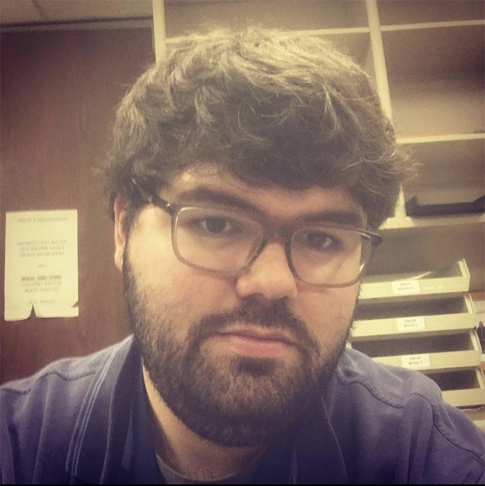

Hello! My name is Caleb and I love creating. My goal is to always have new experiences when it comes to creating and finding news ways to problem solve with my work. I live in Sherwood, AR and have basically explored every college in central Arkansas. I attended the University of Central Arkansas for a year, which is where I took my first college course in web development. I didn't know exactly what I wanted for my life and so decided to drop out and explore myself. I went on my own journey of self discovery; finding hobbies I was interested in and working different jobs where I learned a lot and gained a lot of life experience. In 2018, I returned to school at the University of Arkansas at Pulaski Tech where I received an associates degree in liberal arts and sciences. During my time there, I was invited to a film set as an extra for a short film which ignited a desire within me to create my own projects. I began attending the University of Arkansas at Little Rock in 2019 studying Mass Communication with a Minor in I.T. heights in life, mostly on a personal level, when it comes to creating.
During my time away from school between 2016 and 2018, I began teaching myself video/photo editing as well as html coding. I enjoyed exploring a hobby in photography as I felt a spiritual relationship with nature forming. I also looked to recording video game gameplay to teach myself video editing. As a kid, I always wanted a career in the entertainment industry, and now I think I was on the right path but just a little off. I wanted a career as a creator, which can go hand in hand with entertainment but there are a lot of opportunities outside of entertainment as a creator as well.
While attending the University of Arkansas at Little Rock, I began writing my own scripts for class as well as for personal projects. It wasn't until a class project came around, that I was able to put my creativity and story onto the screen. While in school, I have been involved in many short films including writing, directing, producing and editing two of my own short films. I had the honor of being chosen amongst my peers to direct a third short film for our group capstone project
Over time, I evolved from being a story writer, to a script writer into being a film director. All during this time, I learning new skills in web development. I love to create whether it's for personal projects or working with others for something bigger. I've worked on everything spanning from my own websites to blogs to my own short films. Before taking my web development courses, I explored in creating my own html/css website in fantasy football. I am a big football analyst as statistics was my initial interest heading into college after high school. I took what I taught myself outside of college and started my college courses in web development ahead of schedule. I decided to take on a minor in I.T. alongside my Bachelors in Mass Communication as I believe they go hand in hand. I've built several sites and programs from scratch and am very detailed in my work. I believe these skills together can make me a great asset in many different companies as well as freelance work. I'm determined, creative and open to all ideas when it comes to my work.
After having dropped out of school in 2016, I spent two years working full time until I decided to return to school. I consider this an accomplishment simply because the return rate of drop-outs is 33% for Universities with a drop-out rate of less than 40%.
I wrote, produced, directed and edited my first short film titled, Unspoken, in November 2019. In April 2020, I submitted it into the Made in Arkansas film festival and I was honored by its' acceptance. Since then it has initiated my reputation in film amongst my peers and I was chosen by my class to direct a short film for our group Capstone project as well as being asked to work in a number of other film projects.